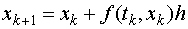
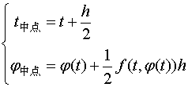
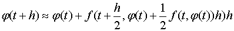
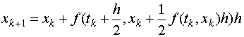

ここでは常微分方程式の数値解法（ルンゲ・クッタ(Runge-Kutta)法）について解説します。
オイラー法による近似計算式

は、tk から、tk+1=tk+h へ解を進展させるものですが、
その際、区間の出発点だけの微分値のみを用いていることが原因で
誤差が h2 で現れてしまいます。
それゆえ、オイラー法による近似計算はあまり正確ではなく、実用には向きません。
そこで、微分値としてtk+1 と tk の中間の値を用い、式を対称化することで
誤差を減らすことを考えます。
まず中点での関数値をオイラー法で求め

この点での微分値で再びオイラー法を適用させると

という近似式を得ることができます。
（注意）テイラーの定理を用いることで、この近似式の誤差がh3のオーダーであることが証明できます。
このように、中点の値を用いて近似を行う常微分方程式の数値解法を「２次ルンゲ・クッタ法」あるいは「中点法」呼んでいます。
プログラムの際便利なようにルンゲ・クッタ法での、 t の差分が h で与えられるときの x=φ(t) の差分に関する漸化式を
与えておきましょう：

例
以下のソースコードは、一次元のバネに取り付けられた物体の運動方程式をルンゲ・クッタ法で解いたものです。
ここで、質量 m=1, バネ定数=1, 時間の刻み=0.05 としました。
#include <stdio.h>
#define K 1 /* K をバネ定数を表すとしてそれを 1 と定める */
int main(){
double t; /* 時間変数 */
double x,xa; /* xは現在のxの値、xaは次のステップの値 */
double xc; /* xcはxの中点のステップ t+dt/2 での値 */
double v,va; /* vは現在のvの値、vaは前のステップの値 */
double vc; /* vcはvの中点のステップ t+dt/2 での値 */
double dt; /* 時間の刻み */
dt=0.05; /* 時間の刻みを 0.05 にする */
x=1.0; /* 初期条件の設定（初期位置） */
v=0.0; /* 初期条件の設定（初期速度）*/
for(t=0.0; t<10; t=t+dt){ /* 0秒から10秒まで dt 刻みで計算 */
printf("%f %f\n",t,x);
xc=x+v*dt/2; /* 中点の座標を求める */
vc=v-K*x*dt/2;
xa=x+vc*dt; /* 中点での微分値を用いて、次のステップを計算 */
va=v-K*xc*dt;
x=xa; /*次のステップの値を現在の値とする*/
v=va;
}
return 0;
}